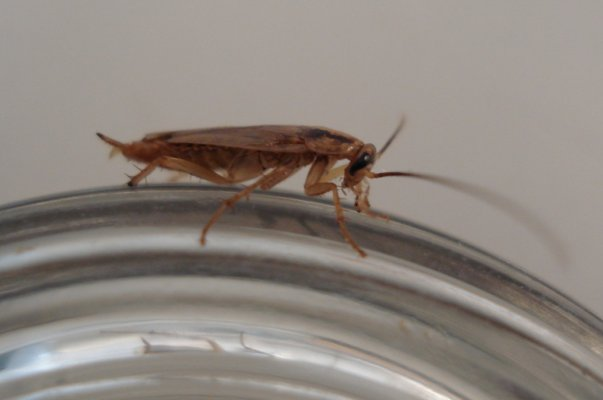
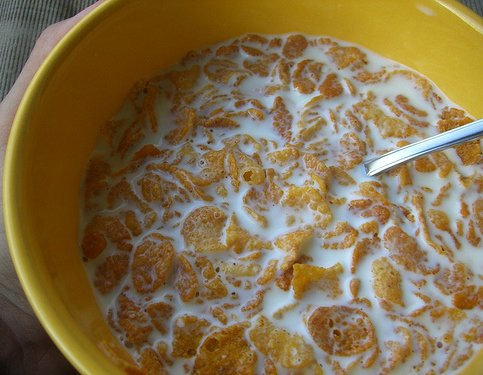
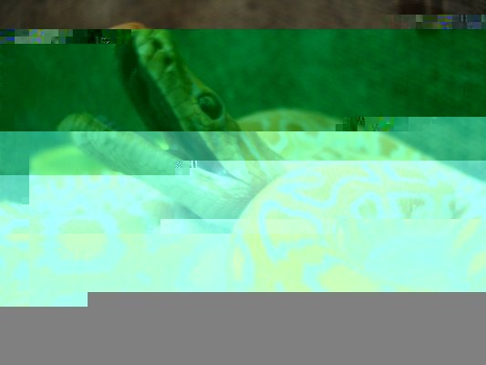

Code tolérant aux erreurs
Victor Stinner
Journées Python 2007
C'est quoi un bogue ?

Comportement inattendu du programme
Conséquences d'un bogue
Origine des bogues
Corriger les bogues
Tolérance aux erreurs
Perte de données
Perte du travail en cours
Corruption des données
Épuisement des ressources
Processeur
Mémoire
Disque dur
Réseau
Échec de la politique de sécurité
Usurpation d'identité
Dénis de service
Vol de données
Gestion bancale des erreurs
Oubli de la vérification du code d'erreur
Erreur dans le code gérant les erreurs (
aïe
!)
Erreur arithmétique
Dépassement de capacité d'un entier ou d'un réel
Division par zéro
Autres origines
Boucle infinie
Appel récursif dans condition d'arrêt
Outils d'analyse statique

pychecker
pyflakes
pylint
assert... ou pas
assert : Est-ce une bonne idée ?
Peut-on garantir que le programme fonctionne sans assert ?
Tolérance aux erreurs
Utiliser try/except sur de gros blocs
Ignorer les erreurs mineures
ERRORS = (ValueError, LookupError, ...)
try:
...
except ERRORS, err:
logError(err)
Générer des erreurs

Entrer des données invalides pour générer des erreurs
Technique du fuzzing
Voir le
projet fusil